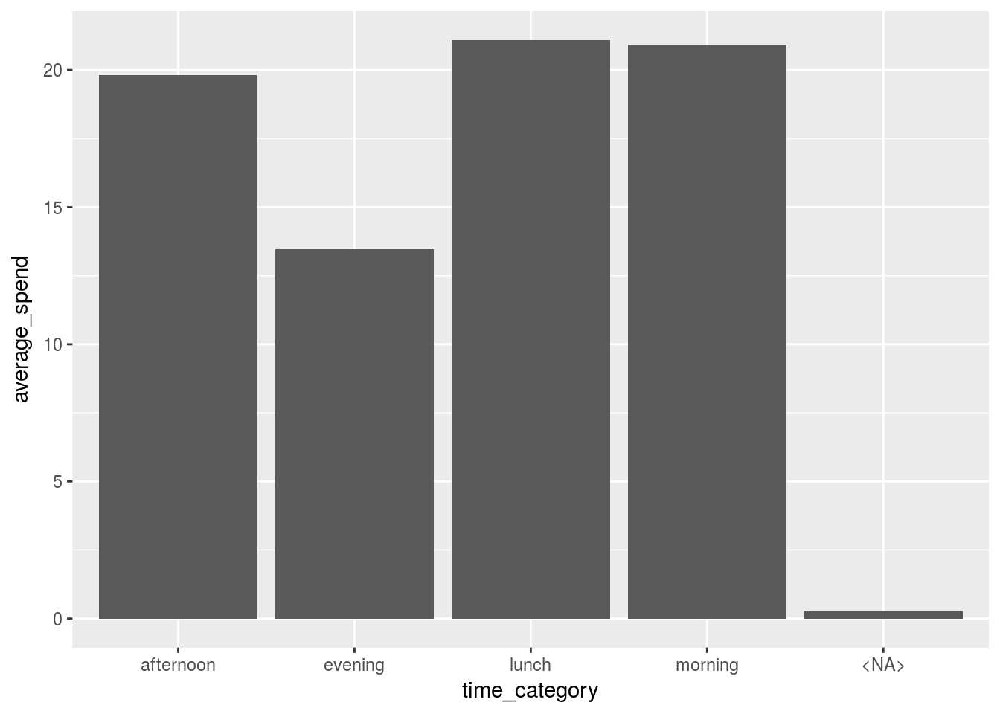

Data_Wrangling
require(EightyR)## Loading required package: EightyRload_toolbox()## -------------------------------------------
## Loading the Analytics Toolbox libary
## -------------------------------------------
##
## purrr
##
## ggplot2
##
## dplyr
##
## tidyr
##
## readr
##
## lubridate
##
## openxlsx# install.packages("openssl")
load_pkg(c("openssl"))Why data-wrangling

Data-wrangling is absolutely essential for every data science task where we need to work with collected data.
A recent article from the New York Times said “Data scientists, according to interviews and expert estimates, spend from 50 percent to 80 percent of their time mired in the mundane labor of collecting and preparing data, before it can be explored for useful information.”
An excelent talk on data wrangling by Jenny Bryan:
https://www.youtube.com/watch?v=4MfUCX_KpdE
It is important to highlight the following facts;
- Excellent data wrangling skills will allow you to make R tools “flow” into one another.
- Different functions require different input formats and so do different solutions!
- The correct shape for the data will greatly simplify the stats needed to solve a problem.
- For example where you would have looped over data you can now simply aggregate
- For example where you would have repeated a model or visualization you now apply it over a hierarchy!
- Being data fluent will allow you to come up with innovative solutions!
The basics - tabular data examples
Here we will use an example of grocery store data.
Import data
What does the data look like?:
dummy_data <-
readRDS("../../static/data/data-wrangling/dummy_data.rds")
dummy_data## # A tibble: 1,000 x 10
## customer_no spend_month store_counts visits_count item_sum
## <chr> <dttm> <int> <int> <int>
## 1 49ef700455a56de… 2012-12-01 00:00:00 1 1 1
## 2 210d4179edb2f92… 2012-12-01 00:00:00 1 1 NA
## 3 5067ea026ecbb08… 2012-12-01 00:00:00 1 1 6
## 4 476cfbe371456be… 2012-12-01 00:00:00 1 1 4
## 5 576c5ac92f6f5ed… 2013-01-01 00:00:00 1 1 1
## 6 e076e43495962ef… 2012-12-01 00:00:00 1 1 1
## 7 0831aff4f6e02b1… 2013-02-01 00:00:00 1 1 1
## 8 8f42509147d136a… 2012-12-01 00:00:00 1 1 NA
## 9 0f7be58a4461e2d… 2013-01-01 00:00:00 1 1 4
## 10 5d519ca4395d166… 2012-12-01 00:00:00 1 1 1
## # ... with 990 more rows, and 5 more variables: discount_sum <dbl>,
## # spend_sum <dbl>, spend_day <chr>, spend_time <chr>, spend_type <chr>Reshaping to answer a question
The basics
Widening
What if I asked you; “Show me the spend in each spend_time on a customer level”.
For a person and also for some models you will need to widen the data. By ‘widen’ we mean adding columns. Humans read better when you describe an obeservation using columns after all…
To widen this data we use the function tidyr::spread
dummy_data %>%
select(customer_no,spend_time,spend_sum) %>%
tidyr::spread(key = spend_time, value = spend_sum, fill = 0) ## # A tibble: 998 x 6
## customer_no afternoon evening lunch morning `<NA>`
## <chr> <dbl> <dbl> <dbl> <dbl> <dbl>
## 1 001dc4f17ad2f7999c215ac147ad9a13 0 0 0 93.0 0
## 2 0020cab9597c12589249daa13a1427a8 30.8 0 0 0 0
## 3 0068525ef1d0d392ad3e97602511551a 59.9 0 0 0 0
## 4 00d75bffda7ea469a511c891a28b2df2 0 0 25.0 0 0
## 5 011aec649b655991c2835f151188c54e 0 0 0 0 0
## 6 014dd528202b032a46564f63100ced5c 0 0 0 422 0
## 7 015392d5b1b6e0b63a4ca5ce1139d4ac 0 30.0 0 0 0
## 8 01948501615939ecb5a8c49af2ab45dd 0 0 0 13.0 0
## 9 01a86d2dba1514e5a92ecb38b408bbe8 43.8 0 0 0 0
## 10 0210fe573d0e13b2cd68cabe31d3a94c 0 0 7.90 0 0
## # ... with 988 more rowsWhat were the averages for these metrics?
wide_summarised <-
dummy_data %>%
select(customer_no,spend_time,spend_sum) %>%
tidyr::spread(key = spend_time, value = spend_sum, fill = 0) %>%
summarise_if(is.numeric,mean,na.rm=TRUE)
wide_summarised## # A tibble: 1 x 5
## afternoon evening lunch morning `<NA>`
## <dbl> <dbl> <dbl> <dbl> <dbl>
## 1 19.8 13.5 21.1 20.9 0.271Moving back to long format
This was very basic, but what if we wanted to do this in reverse?
Of course we can do the exact opposite using tidyr::gather
Let’s visualize the spend in each time category by moving back to the less natural ‘long’ format. Functions generally become more powerful the longer we can shape the data since they naturally scan vectors of columns
wide_summarised %>%
tidyr::gather(key = "time_category", value = "average_spend") %>%
ggplot(aes( x = time_category, y = average_spend))+
geom_bar(stat = "identity")
With the wide format we would need to plot each column individually but now we can do them altogether.